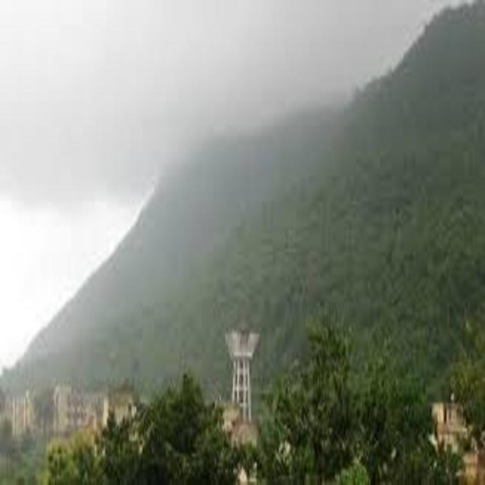
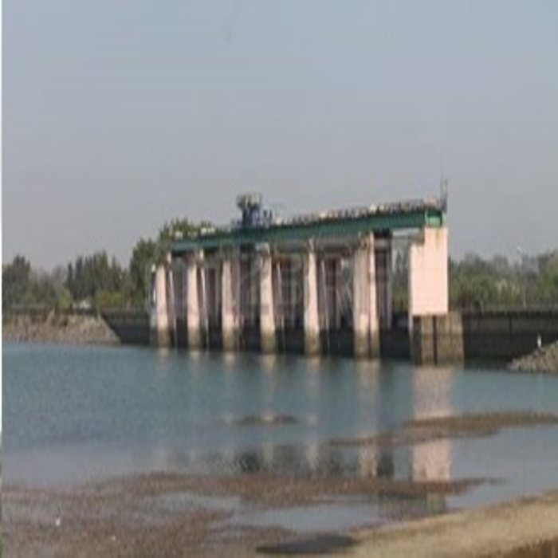
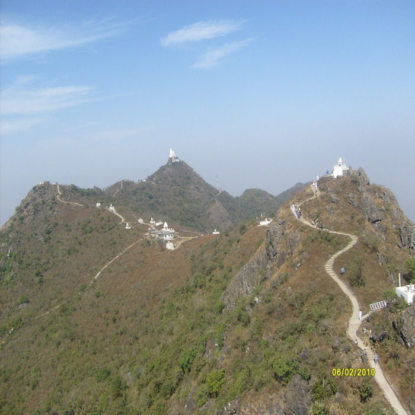

Luguburu Ghantabari situated near TTPS Lalpania a small village of “Santhalis” a group of Tribal , about 16 kilometer far from Gomia Block is the pride of Santal community since the period of civilization called Sosnok Jug in Hor-dishom. Luguburu Ghantabari Dharamgarh was re-established in the year 2000. Then the every year religious gathering is held at Darbar Chatani under foot hill of Luguburu in the lap of famous Lugu hill series (The second highest hill series of jharkhand) and surrounded with Jharkhand’s famous river Damodar and small hilly rivers Katail and Sadabahar , situated in the north side of Tenughat Dam. On Kartik Purnima a famous Mela of Santhalies is organized here & Santhal tribal of all over India use to come here to offer prayer to their lord LUGU BABA. “Pahan” use to perform the puja.Shyamali a guest house of T.T.P.S is a beautiful building, constructed on road side hill top. A typical scene of Tenughat water reservoir, Luguburu hills , snake like roads can be observed from its rooftop. At the bottom of Shyamali and besides the Lalpania Gomia road a very attractive statue of “Birsa Bhagwan’ is made.
The Jawaharlal Nehru Biological Park is a zoological park in Bokaro Steel City. Having been constructed in the year 1980, the park underwent a renovation in the year 1989. It is situated 2km from the city centre. It is owned and managed by the Bokaro Steel Plant, Steel Authority of India Limited. Additionally, this attraction is credited to be Jharkhand’s largest zoological garden. The zoological park became famous for its rare collection of big cats such as White Tigers and Asiatic Lions.The zoo houses many amazing species of animals and plants and is a truly fascinating place to visit for adults and children alike. It also has a toy train and boating facility available in its artificial lake. It is the largest Zoological Garden in the State. The zoo has varieties of animals and birds which have been brought from different parts of world.
Garga Dam, situated around 12 km from the city centre, close to the railway station on the NH-23, is a beautiful picnic spot for the Bokaro citizens. The dam is built for the purposes of the steel plants and for water supply to the people in the town. Its green surroundings and species of aquatic habitat inhabiting in and around Garga Dam attract school excursions and biological expeditions to the area.Garga is a tributary of the Damodar River that flows on the southern parts of the city of Bokaro. The power generated from the dam and the water is used for industrial and civilian purposes of Bokaro. But, its appeal lies in its picturesque setting with greenery all around and the wonderful river which makes it a picnic spot.
City Park is situated in Sector 3 of the city of Bokaro. The park has an artificial lake, which is thronged by visitors especially on weekends for picnic.It is situated 2 km from the city centre and it is a lovely place with greenery, lake and beautiful restaurants along the lake’s shore providing a perfect setting for spending some quality time with family and friends. The lake has boating facility available in it. The city park having a musical fountain inside it.One giant artificial lake and three artificial island along with amazing greenery is what constitutes the City Park of Bokaro. The city park is a lovely place with greenery, lake and beautiful restaurants along the lake’s shore providing a perfect setting for spending some quality time with family and friends.
Parasnath Hills is easily accessible. Parasnath Hills is located in a very good area. You can travel to this amazing place by hiring a cab or you can travel by local transportation. Travelling by cab is the best option. The place is well-connected and once you reach the destination you can see many other places too. This is a must visit place for all.
Located at the centre of the Bokaro city, the Jagannath Temple is one of the most revered religious sites for the Hindu devotees. Marked as a popular tourist attraction, it is a replica of the Jagannath Temple in Puri, Orrisa. The Bokaro Steel Plant Management has refurbished and redecorated the temple to an ovation-worthy degree. The RathYatra is the major attraction for this temple, heldonce a year.